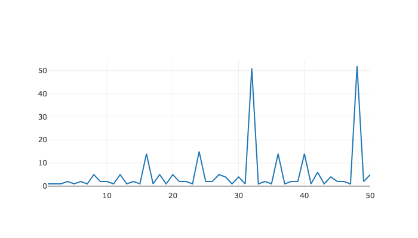
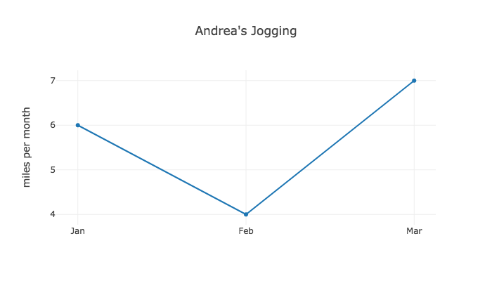
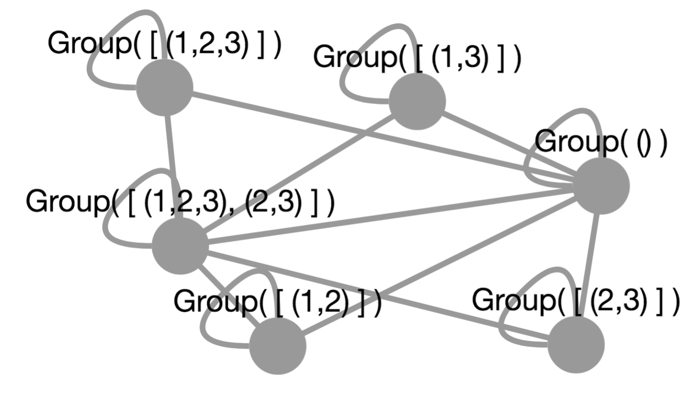
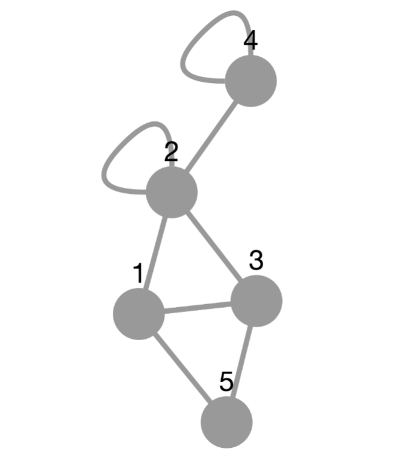

‣ Plot( various ) | ( function ) |
Returns: one of two things, documented below
If evaluated in a Jupyter Notebook, the result of this function, when rendered by that notebook, will run JavaScript code that generates and shows a plot in the output cell, which could be any of a wide variety of data visualizations, including bar charts, pie charts, scatterplots, etc. (To draw a vertex-and-edge graph, see PlotGraph (7.1-3) instead.)
If evaluated outside of a Jupyter Notebook, the result of this function is the name of a temporary file stored on disk in which HTML code for such a visualization has been written, and on which GAP has already invoked the user's default web browser. The user should see the visualization appear in the browser immediately before the return value is shown.
This function can take data in a wide variety of input formats. Here is the current list of acceptable formats:
If X is a list of x values and Y is a list of y values then Plot(X,Y) plots them as ordered pairs.
If X is a list of x values and f is a GAP function that can be applied to each x to yield a corresponding y, then Plot(X,f) computes those corresponding y values and plots everything as ordered pairs.
If P is a list of (x,y) pairs then Plot(P) plots those ordered pairs.
If Y is a list of y values then Plot(Y) assumes the corresponding x values are 1, 2, 3, and so on up to the length of Y. It then plots the corresponding set of ordered pairs.
If f is a GAP function then Plot(f) assumes that f requiers integer inputs and evaluates it on a small domain (1 through 5) of x values and plots the resulting (x,y) pairs.
In any of the cases above, a new, last argument may be added that is a GAP record (call it R) containing options for how to draw the plot, including the plot type, title, axes options, and more. Thus the forms Plot(X,Y,R), Plot(X,f,R), Plot(P,R), Plot(Y,R), and Plot(f,R) are all acceptable. (For details, see ConvertDataSeriesForTool (7.1-2).)
If A1 is a list of arguments fitting any of the cases documented above (such as [X,f]) and A2 is as well, and so on through An, then Plot(A1,A2,...,An) creates a combination plot with all of the data from each of the arguments treated as a separate data series. If the arguments contain conflicting plot options (e.g., the first requests a line plot and the second a bar chart) then the earliest option specified takes precedence.
# Plot the number of small groups of order n, from n=1 to n=50: Plot( [1..50], NrSmallGroups );

# Plot how much Andrea has been jogging lately:
Plot( ["Jan","Feb","Mar"], [46,59,61],
rec( title := "Andrea's Jogging", yaxis := "miles per month" ) );

‣ ConvertDataSeriesForTool | ( global variable ) |
The JupyterViz Package has a high-level API and a low-level API. The high-level API involves functions like Plot, which take data in a variety of convenient formats, and produce visualizations from them. The low-level API can be used to pass JSON data structures to JavaScript visualization tools in their own native formats for rendering. The high-level API is built on the low-level API, using key functions to do the conversion.
The conversion functions for plots are stored in a global dictionary in this variable. It is a GAP record mapping visualization tool names (such as plotly, etc., a complete list of which appears in Section 1.1) to conversion functions. Only those tools that support plotting data in the form of (x,y) pairs should be included. (For example, tools that specialize in drawing vertex-and-edge graphs are not relevant here.)
Each conversion function must behave as follows. It expects its input object to be a single data series, which will be a GAP record with three fields:
x - a list of x values for the plot
y - the corresponding list of y values for the same plot
options - another (inner) GAP record containing any of the options documented in Section 2.2.
The output of the conversion function should be a GAP record amenable to conversion (using GapToJsonString from the json package) into JSON. The format of the JSON is governed entirely by the tool that will be used to visualize it, each of which has a different data format it expects.
Those who wish to install new visualization tools for plots (as discussed in Chapter 5) will want to install a new function in this object corresponding to the new tool. If you plan to do so, consider the source code for the existing conversion functions, which makes use of two useful convenince methods, JUPVIZFetchWithDefault (7.3-12) and JUPVIZFetchIfPresent (7.3-13). Following those examples will help keep your code consistent with existing code and as concise as possible.
‣ PlotGraph( various ) | ( function ) |
Returns: one of two things, documented below
If evaluated in a Jupyter Notebook, the result of this function, when rendered by that notebook, will run JavaScript code that generates and shows a graph in the output cell, not in the sense of coordinate axes, but in the sense of vertices and edges. (To graph a function or data set on coordinate axes, use Plot (7.1-1) instead.)
If evaluated outside of a Jupyter Notebook, the result of this function is the name of a temporary file stored on disk in which HTML code for such a visualization has been written, and on which GAP has already invoked the user's default web browser. The user should see the visualization appear in the browser immediately before the return value is shown.
This function can take data in a wide variety of input formats. Here is the current list of acceptable formats:
If V is a list and E is a list of pairs of items from V then PlotGraph(V,E) treats them as vertex and edge sets, respectively.
If V is a list and R is a GAP function then PlotGraph(V,R) treats V as the vertex set and calls R(v1,v2) for every pair of vertices (in both orders) to test whether there is an edge between them. It exepcts R to return boolean values.
If E is a list of pairs then PlotGraph(E) treats E as a list of edges, inferring the vertex set to be any vertex mentioned in any of the edges.
If M is a square matrix then PlotGraph(M) treats M as an adjacency matrix whose vertices are the integers 1 through n (the height of the matrix) and where two vertices are connected by an edge if and only if that matrix entry is positive.
In any of the cases above, a new, last argument may be added that is a GAP record containing options for how to draw the graph, such as the tool to use. For details on the supported options, see ConvertGraphForTool (7.1-4).
# Plot the subgroup lattice for a small group: G := Group((1,2),(2,3)); PlotGraph( AllSubgroups(G), IsSubgroup );

# Plot a random graph on 5 vertices: # (The results change from one run to the next, of course.) PlotGraph( RandomMat(5,5) );

‣ ConvertGraphForTool | ( global variable ) |
The JupyterViz Package has a high-level API and a low-level API. The high-level API involves functions like PlotGraph, which take data in a variety of convenient formats, and produce visualizations from them. The low-level API can be used to pass JSON data structures to JavaScript visualization tools in their own native formats for rendering. The high-level API is built on the low-level API, using key functions to do the conversion.
The conversion functions for graphs are stored in a global dictionary in this variable. It is a GAP record mapping visualization tool names (such as cytoscape, a complete list of which appears in Section 1.1) to conversion functions. Only those tools that support graphing vertex and edge sets should be included. (For example, tools that specialize in drawing plots of data stored as (x,y) pairs are not relevant here.)
Each conversion function must behave as follows. It expects its input object to be a single graph, which will be a GAP record with three fields:
vertices - a list of vertex names for the graph. These can be any GAP data structure and they will be converted to strings with PrintString. The one exception is that you can give each vertex a position by making it a record with three entries: name, x, and y. In this way, you can manually lay out a graph.
edges - a list of pairs from the vertices list, each of which represents an edge
options - a GAP record containing any of the options documented in Section 2.4.
The output of the conversion function should be a GAP record amenable to conversion (using GapToJsonString from the json package) into JSON. The format of the JSON is governed entirely by the tool that will be used to visualize it, each of which has a different data format it expects.
Those who wish to install new visualization tools for graphs (as discussed in Chapter 5) will want to install a new function in this object corresponding to the new tool. If you plan to do so, consider the source code for the existing conversion functions, which makes use of two useful convenince methods, JUPVIZFetchWithDefault (7.3-12) and JUPVIZFetchIfPresent (7.3-13). Following those examples will help keep your code consistent with existing code and as concise as possible.
‣ PlotDisplayMethod | ( global variable ) |
The JupyterViz Package can display visualizations in three different ways, and this global variable is used to switch among those ways.
PlotDisplayMethod := PlotDisplayMethod_HTML;
Users of this package almost never need to alter the value of this variable because a sensible default is chosen at package loading time. If the JupyterViz Package is loaded after the JupyterKernel Package, it notices the presence of that package and leverage its tools to set up support for plotting in a Jupyter environment. Furthermore, it will initialize PlotDisplayMethod to PlotDisplayMethod_Jupyter (7.1-6), which is probably what the user wants. Note that if one calls LoadPackage("JupyterViz"); from a cell in a Jupyter notebook, this is the case that applies, because clearly in such a case, the JupyterKernel Package was already loaded.
If the JupyterViz Package is loaded without the JupyterKernel Package already loaded, then it will initialize PlotDisplayMethod to PlotDisplayMethod_HTML (7.1-8), which is what the user probably wants if using GAP from a terminal, for example. You may later assign PlotDisplayMethod to another value, but doing so has little purpose from the REPL. You would need to first load the JupyterKernel Package, and even then, all that would be produced by this package would be data structures that would, if evaluated in a Jupyter notebook, produce visualizations.
‣ PlotDisplayMethod_Jupyter | ( global variable ) |
This global constant can be assigned to the global variable PlotDisplayMethod (7.1-5) as documented above. Doing so produces the following results.
Functions such as Plot (7.1-1), PlotGraph (7.1-3), and CreateVisualization (7.2-5) will return objects of type JupyterRenderable, which is defined in the JupyterKernel Package.
Such objects, when rendered in a Jupyter cell, will run a block of JavaScript contained within them, which will create the desired visualization.
Such scripts tend to request additional information from GAP as they are running, by using calls to the JavaScript function Jupyter.kernel.execute defined in the notebook. Such calls are typically to fetch JavaScript libraries needed to create the requested visualization.
Visualizations produced this way will not be visible if one later closes and then reopens the Jupyter notebook in which they are stored. To see the visualizations again, one must re-evaluate the cells that created them, so that the required libraries are re-fetched from the GAP Jupyter kernel.
‣ PlotDisplayMethod_JupyterSimple | ( global variable ) |
This global constant can be assigned to the global variable PlotDisplayMethod (7.1-5) as documented above. Doing so produces the following results.
Functions such as Plot (7.1-1), PlotGraph (7.1-3), and CreateVisualization (7.2-5) will return objects of type JupyterRenderable, which is defined in the JupyterKernel Package.
Such objects, when rendered in a Jupyter cell, will run a block of JavaScript contained within them, which will create the desired visualization.
Such scripts will be entirely self-contained, and thus will not make any additional requests from the GAP Jupyter kernel. This makes such objects larger because they must contain all the required JavaScript visualization libraries, rather than being able to request them as needed later.
Visualizations produced this way will be visible even if one later closes and then reopens the Jupyter notebook in which they are stored, because all the code needed to create them is included in the output cell itself, and is re-run upon re-opening the notebook.
‣ PlotDisplayMethod_HTML | ( global variable ) |
This global constant can be assigned to the global variable PlotDisplayMethod (7.1-5) as documented above. Doing so produces the following results.
Functions such as Plot (7.1-1), PlotGraph (7.1-3), and CreateVisualization (7.2-5) will return no value, but will instead store HTML (and JavaScript) code for the visualization in a temporary file on the filesystem, then launch the operating system's default web browser to view that file.
Such files are entirely self-contained, and require no GAP session to be running to continue viewing them. They can be saved anywhere the user likes for later viewing, printing, or sharing without GAP.
Visualizations produced this way will not be visible if one later closes and then reopens the Jupyter notebook in which they are stored. To see the visualizations again, one must re-evaluate the cells that created them, so that the required libraries are re-fetched from the GAP Jupyter kernel.
‣ RunJavaScript( script[, returnHTML] ) | ( function ) |
Returns: one of two things, documented below
If run in a Jupyter Notebook, this function returns an object that, when rendered by that notebook, will run the JavaScript code given in script.
If run outside of a Jupyter Notebook, this function creates an HTML page containing the given script, an HTML element on which that script can act, and the RequireJS library for importing other script tools. It then opens the page in the system default web browser (thus running the script) and returns the path to the temporary file in which the script is stored.
In this second case only, the optional second parameter (which defaults to false) can be set to true if the caller does not wish the function to open a web browser, but just wants the HTML content that would have been displayed in such a browser returned as a string instead.
When the given code is run, the varible element will be defined in its environment, and will contain either the output element in the Jupyter notebook corresponding to the code that was just evaluated or, in the case outside of Jupyter, the HTML element mentioned above. The script is free to write to that element in both cases.
‣ LoadJavaScriptFile( filename ) | ( function ) |
Returns: the string contents of the file whose name is given
Interprets the given filename relative to the lib/js/ path in the JupyterViz package's installation folder, because that is where this package stores its JavaScript libraries. A .js extension will be added to filename iff needed. A .min.js extension will be added iff such a file exists, to prioritize minified versions of files.
If the file has been loaded before in this GAP session, it will not be reloaded, but will be returned from a cache in memory, for efficiency.
If no such file exists, returns fail and caches nothing.
‣ InstallVisualizationTool( toolName, script ) | ( function ) |
Returns: boolean indicating success (true) or failure (false)
This function permits extending, at runtime, the set of JavaScript visualization tools beyond those that are built into the JupyterViz package.
The first argument must be the name of the visualization tool (a string, which you will later use in the tool field when calling CreateVisualization (7.2-5)). The second must be a string of JavaScript code that installs into window.VisualizationTools.TOOL_NAME_HERE the function for creating visualizations using that tool. It can also define other helper functions or make calls to window.requirejs.config. For examples of how to write such JavaScript code, see the chapter on extending this package in its manual.
This function returns false and does nothing if a tool of that name has already been installed. Otherwise, it installs the tool and returns true.
There is also a convenience method that calls this one on your behalf; see InstallVisualizationToolFromTemplate (7.2-4).
‣ InstallVisualizationToolFromTemplate( toolName, functionBody[, CDNURL] ) | ( function ) |
Returns: boolean indicating success (true) or failure (false)
This function is a convenience function that makes it easier to use InstallVisualizationTool (7.2-3); see the documentation for that function, then read on below for how this function makes it easier.
Most visualization tools do two things: First, they install a CDN URL into window.requirejs.config for some external JavaScript library that must be loaded in the client to support the given type of visualization. Second, they install a function as window.VisualizationTools.TOOL_NAME_HERE accepting parameters element, json, and callback, and building the desired visualization inside the given DOM element. Such code often begins with a call to require(['...'],function(library}{/*...*/})), but not always.
This function will write for you the boiler plate code for calling window.requirejs.config and the declaration and installation of a function into window.VisualizationTools.TOOL_NAME_HERE. You provide the function body and optionally the CDN URL. (If you provide no CDN URL, then no external CDN will be installed into requirejs.)
‣ CreateVisualization( data[, code] ) | ( function ) |
Returns: one of two things, documented below
If run in a Jupyter Notebook, this function returns an object that, when rendered by that notebook, will produce the visualization specified by data in the corresponding output cell, and will also run any given code on that visualization.
If run outside of a Jupyter Notebook, this function creates an HTML page containing the visualization specified by data and then opens the page in the system default web browser. It will also run any given code as soon as the page opens. The data must be a record that will be converted to JSON using GAP's json package.
The second argument is optional, a string containing JavaScript code to run once the visualization has been created. When that code is run, the variables element and visualization will be in its environment, the former holding the output element in the notebook containing the visualization, and the latter holding the visualization element itself.
The data should have the following attributes.
tool (required) - the name of the visualization tool to use. Currently supported tools are listed in Section 1.2 and links to their documentation are given in Section 3.4.
data (required) - subobject containing all options specific to the content of the visualization, often passed intact to the external JavaScript visualization library. You should prepare this data in the format required by the library specified in the tool field, following the documentation for that library, linked to in Section 3.4.
width (optional) - width to set on the output element being created
height (optional) - similar, but height
CreateVisualization( rec(
tool := "html",
data := rec( html := "I am <i>SO</i> excited about this." )
), "console.log( 'Visualization created.' );" );
Using the convention common to GAP packages, we prefix all methods not intended for public use with a sequence of characters that indicate our particular package. In this case, we use the JUPVIZ prefix. This is a sort of "poor man's namespacing."
None of these methods should need to be called by a client of this package. We provide this documentation here for completeness, not out of necessity.
‣ JUPVIZAbsoluteJavaScriptFilename( filename ) | ( function ) |
Returns: a JavaScript filename to an absolute path in the package dir
Given a relative filename, convert it into an absolute filename by prepending the path to the lib/js/ folder within the JupyterViz package's installation folder. This is used by functions that need to find JavaScript files stored there.
A .js extension is appended if none is included in the given filename.
‣ JUPVIZLoadedJavaScriptCache | ( global variable ) |
A cache of the contents of any JavaScript files that have been loaded from this package's folder. The existence of this cache means needing to go to the filesystem for these files only once per GAP session. This cache is used by LoadJavaScriptFile (7.2-2).
‣ JUPVIZFillInJavaScriptTemplate( filename, dictionary ) | ( function ) |
Returns: a string containing the contents of the given template file, filled in using the given dictionary
A template file is one containing identifiers that begin with a dollar sign ($). For example, $one and $two are both identifiers. One "fills in" the template by replacing such identifiers with whatever text the caller associates with them.
This function loads the file specified by filename by passing that argument directly to LoadJavaScriptFile (7.2-2). If no such file exists, returns fail. Otherwise, it proceed as follows.
For each key-value pair in the given dictionary, prefix a $ onto the key, suffix a newline character onto the value, and then replace all occurrences of the new key with the new value. The resulting string is the result.
The newline character is included so that if any of the values in the dictionary contains single-line JavaScript comment characters (//) then they will not inadvertently affect later code in the template.
‣ JUPVIZRunJavaScriptFromTemplate( filename, dictionary[, returnHTML] ) | ( function ) |
Returns: the composition of RunJavaScript (7.2-1) with JUPVIZFillInJavaScriptTemplate (7.3-3)
This function is quite simple, and is just a convenience function. The optional third argument is passed on to RunJavaScript internally.
‣ JUPVIZRunJavaScriptUsingRunGAP( jsCode[, returnHTML] ) | ( function ) |
Returns: an object that, if rendered in a Jupyter notebook, will run jsCode as JavaScript after runGAP has been defined
There is a JavaScript function called runGAP, defined in the using-runGAP.js file distributed with this package. That function makes it easy to make callbacks from JavaScript in a Jupyter notebook to the GAP kernel underneath that notebook. This GAP function runs the given jsCode in the notebook, but only after ensuring that runGAP is defined globally in that notebook, so that jsCode can call runGAP as needed.
The optional third argument is passed on to RunJavaScript internally.
An example use, from JavaScript, of the runGAP function appears at the end of Section 4.3.
‣ JUPVIZRunJavaScriptUsingLibraries( libraries, jsCode[, returnHTML] ) | ( function ) |
Returns: one of two things, documented below
If run in a Jupyter Notebook, this function returns an object that, when rendered by that notebook, will run jsCode as JavaScript after all libraries have been loaded (which typically happens asynchronously).
If run outside of a Jupyter Notebook, this function loads all the code for the given libraries from disk and concatenates them (with checks to be sure no library is loaded twice) followed by jsCode. It then calls RunJavaScript (7.2-1) on the result, to form a web page and display it to the user.
There are a set of JavaScript libraries stored in the lib/js/ subfolder of this package's installation folder. Neither the Jupyter notebook nor the temporary HTML files created from the command line know, by default, about any of those libraries. Thus this function is necessary so that jsCode can assume the existence of the tools it needs to do its job.
If the first parameter is given as a string instead of a list of strings, it is treated as a list of just one string.
The optional third argument is passed on to RunJavaScript internally.
JUPVIZRunJavaScriptUsingLibraries( [ "mylib.js" ],
"alert( 'My Lib defines foo to be: ' + window.foo );" );
# Equivalently:
JUPVIZRunJavaScriptUsingLibraries( "mylib.js",
"alert( 'My Lib defines foo to be: ' + window.foo );" );
‣ JUPVIZMakePlotDataSeries( series ) | ( function ) |
Returns: a record with the appropriate fields (x, y, options) that can be passed to one of the functions in ConvertDataSeriesForTool (7.1-2)
This function is called by Plot (7.1-1) to convert any of the wide variety of inputs that Plot (7.1-1) might receive into a single internal format. Then that internal format can be converted to the JSON format needed by any of the visualization tools supported by this package.
See the documentation for ConvertDataSeriesForTool (7.1-2) for more information on how that latter conversion takes place, and the format it expects.
‣ JUPVIZMakePlotGraphRecord( various ) | ( function ) |
Returns: a record with the appropriate fields (vertices, edges, options) that can be passed to one of the functions in ConvertGraphForTool (7.1-4)
This function is called by PlotGraph (7.1-3) to convert any of the wide variety of inputs that PlotGraph (7.1-3) might receive into a single internal format. Then that internal format can be converted to the JSON format needed by any of the visualization tools supported by this package.
See the documentation for ConvertGraphForTool (7.1-4) for more information on how that latter conversion takes place, and the format it expects.
‣ JUPVIZPlotDataSeriesList( series1, series2, series3... ) | ( function ) |
Returns: a JupyterRenderable object ready to be displayed in the Jupyter Notebook
Because the Plot (7.1-1) function can take a single data series or many data series as input, it detects which it received, then passes the resulting data series (as an array containing one or more series) to this function for collecting into a single plot.
It is not expected that clients of this package will need to call this internal function.
‣ JUPVIZRecordKeychainLookup( record, keychain, default ) | ( function ) |
Returns: the result of looking up the chain of keys in the given record
In nested records, such as myRec:=rec(a:=rec(b:=5)), it is common to write code such as myRec.a.b to access the internal values. However when records are passed as parameters, and may not contain every key (as in the case when some default values should be filled in automatically), code like myRec.a.b could cause an error. Thus we wish to first check before indexing a record that the key we're looking up exists. If not, we wish to return the value given as the default instead.
This function accepts a record (which may have other records inside it as values), an array of strings that describe a chain of keys to follow inward (["a","b"] in the example just given), and a default value to return if any of the keys do not exist.
It is not expected that clients of this package will need to call this internal function. It is used primarily to implement the JUPVIZFetchWithDefault (7.3-12) function, which is useful to those who wish to extend the ConvertDataSeriesForTool (7.1-2) and ConvertGraphForTool (7.1-4) objects.
myRec := rec( height := 50, width := 50, title := rec( text := "GAP", fontSize := 20 ) ); JUPVIZRecordKeychainLookup( myRec, [ "height" ], 10 ); # = 50 JUPVIZRecordKeychainLookup( myRec, [ "width" ], 10 ); # = 50 JUPVIZRecordKeychainLookup( myRec, [ "depth" ], 10 ); # = 10 JUPVIZRecordKeychainLookup( myRec, [ "title", "text" ], "Title" ); # = "GAP" JUPVIZRecordKeychainLookup( myRec, [ "title", "color" ], "black" ); # = "black" JUPVIZRecordKeychainLookup( myRec, [ "one", "two", "three" ], fail ); # = fail
‣ JUPVIZRecordsKeychainLookup( records, keychain, default ) | ( function ) |
Returns: the result of looking up the chain of keys in each of the given records until a lookup succeeds
This function is extremely similar to JUPVIZRecordKeychainLookup (7.3-10) with the following difference: The first parameter is a list of records, and JUPVIZRecordKeychainLookup (7.3-10) is called on each in succession with the same keychain. If any of the lookups succeeds, then its value is returned and no further searching through the list is done. If all of the lookups fail, the default is returned.
It is not expected that clients of this package will need to call this internal function. It is used primarily to implement the JUPVIZFetchWithDefault (7.3-12) function, which is useful to those who wish to extend the ConvertDataSeriesForTool (7.1-2) and ConvertGraphForTool (7.1-4) objects.
myRecs := [
rec( height := 50, width := 50, title := rec(
text := "GAP", fontSize := 20
) ),
rec( width := 10, depth := 10, color := "blue" )
];
JUPVIZRecordsKeychainLookup( myRecs, [ "height" ], 0 ); # = 50
JUPVIZRecordsKeychainLookup( myRecs, [ "width" ], 0 ); # = 50
JUPVIZRecordsKeychainLookup( myRecs, [ "depth" ], 0 ); # = 10
JUPVIZRecordsKeychainLookup( myRecs, [ "title", "text" ], "Title" ); # = "GAP"
JUPVIZRecordsKeychainLookup( myRecs, [ "color" ], "" ); # = "blue"
JUPVIZRecordsKeychainLookup( myRecs, [ "flavor" ], fail ); # = fail
‣ JUPVIZFetchWithDefault( record, others, chain, default, action ) | ( function ) |
Returns: nothing
This function is designed to make it easier to write new entries in the ConvertDataSeriesForTool (7.1-2) and ConvertGraphForTool (7.1-4) functions. Those functions are often processing a list of records (here called others) sometimes with one record the most important one (here called record) and looking up a chain of keys (using default just as in JUPVIZRecordKeychainLookup (7.3-10)) and then taking some action based on the result. This function just allows all of that to be done with a single call.
Specifically, it considers the array of records formed by Concatenation([record],others) and calls JUPVIZRecordsKeychainLookup (7.3-11) on it with the given chain and default. (If the chain is a string, it is automatically converted to a length-one list with the string inside.) Whatever the result, the function action is called on it, even if it is the default.
# Trivial examples: myRec := rec( a := 5 ); myRecs := [ rec( b := 3 ), rec( a := 6 ) ]; f := function ( x ) Print( x, "\n" ); end; JUPVIZFetchWithDefault( myRec, myRecs, "a", 0, f ); # prints 5 JUPVIZFetchWithDefault( myRec, myRecs, "b", 0, f ); # prints 3 JUPVIZFetchWithDefault( myRec, myRecs, "c", 0, f ); # prints 0 JUPVIZFetchWithDefault( myRec, myRecs, ["a","b"], 0, f ); # prints 0 # Useful example: JUPVIZFetchWithDefault( primaryRecord, secondaryRecordsList, [ "options", "height" ], 400, function ( h ) myGraphJSON.height := h; end );
See also JUPVIZFetchIfPresent (7.3-13).
‣ JUPVIZFetchIfPresent( record, others, chain, action ) | ( function ) |
Returns: nothing
This function is extremely similar to JUPVIZFetchWithDefault (7.3-12) with the following exception: No default value is provided, and thus if the lookup fails for all the records (including record and everything in others) then the action is not called.
Examples:
myRec := rec( a := 5 ); myRecs := [ rec( b := 3 ), rec( a := 6 ) ]; f := function ( x ) Print( x, "\n" ); end; JUPVIZFetchIfPresent( myRec, myRecs, "a", 0, f ); # prints 5 JUPVIZFetchIfPresent( myRec, myRecs, "b", 0, f ); # prints 3 JUPVIZFetchIfPresent( myRec, myRecs, "c", 0, f ); # does nothing JUPVIZFetchIfPresent( myRec, myRecs, ["a","b"], 0, f ); # does nothing
This code is documented for completeness's sake only. It is not needed for clients of this package. Package maintainers may be interested in it in the future.
The JupyterKernel package defines a method JupyterRender that determines how GAP data will be shown to the user in the Jupyter notebook interface. When there is no method implemented for a specific data type, the fallback method uses the built-in GAP method ViewString.
This presents a problem, because we are often transmitting string data (the contents of JavaScript files) from the GAP kernel to the notebook, and ViewString is not careful about how it escapes characters such as quotation marks, which can seriously mangle code. Thus we must define our own type and JupyterRender method for that type, to prevent the use of ViewString.
The declarations documented below do just that. In the event that ViewString were upgraded to more useful behavior, this workaround could probably be removed. Note that it is used explicitly in the using-library.js file in this package.
If this package is loaded without the JupyterKernel package having already been loaded, then the following functions and tools are not defined, because their definitions rely on global data made available by the JupyterKernel package.
‣ JUPVIZIsFileContents( arg ) | ( filter ) |
Returns: true or false
The type we create is called FileContents, because that is our purpose for it (to preserve, unaltered, the contents of a text file).
‣ JUPVIZIsFileContentsRep( arg ) | ( filter ) |
Returns: true or false
The representation for the FileContents type
‣ JUPVIZFileContents( arg ) | ( operation ) |
A constructor for FileContents objects
Elsewhere, the JupyterViz package also installs a JupyterRender method for FileContents objects that just returns their text content untouched.
generated by GAPDoc2HTML